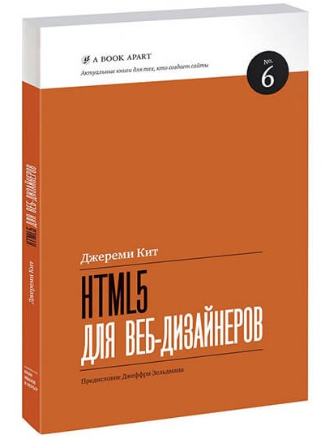
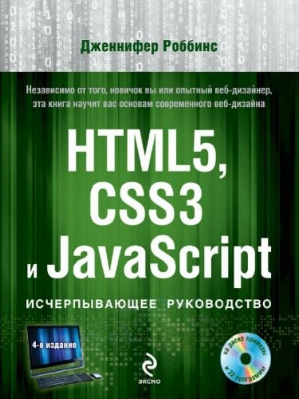
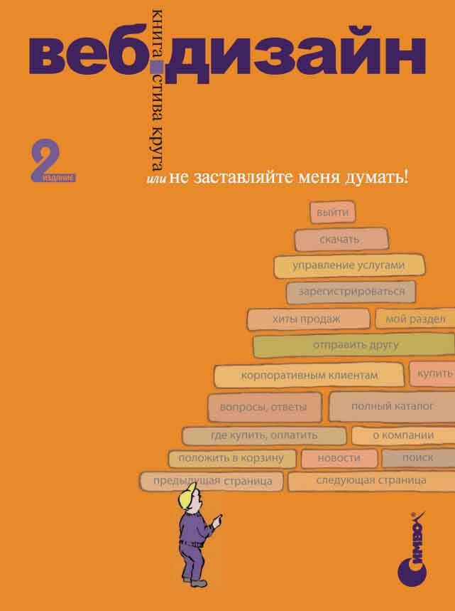
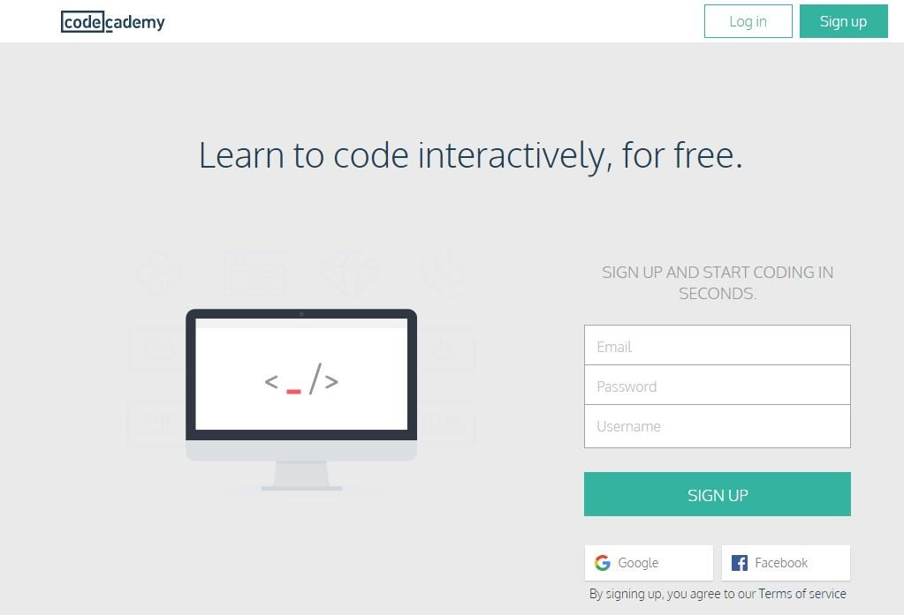
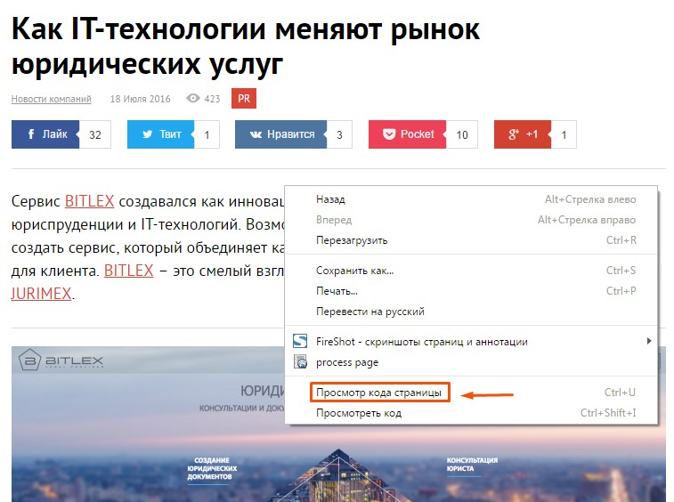

Так багато варіантів!
Опустимо питання, навіщо вам це потрібно, – напевно, якщо ви читаєте цю
статтю,
особисто для себе у вас вже є на нього
відповідь. Можливо, ви хочете створювати сайти для себе чисто як хобі або в майбутньому перетворити
їх на бізнес. Чи
вирішили, що це саме та професія, яка вам підходить, і створення сайтів на замовлення стане для вас
основним заняттям у
найближчі кілька років. І те й інше – добре.
Є багато підходів до вивчення веб-дизайну, деякі з них платні, наприклад
курси, інші ж безкоштовні.
Число методів навчання дуже зросло, завдяки поширенню інтерактивності в Мережі, – відеоканали на
YouTube, навчальні платформи і багато іншого.
Я, як і багато інших, вважаю, що найкращим варіантом вивчення є саме
самостійна практика. Курси
можна розглядати хіба що
як варіант отримання теоретичної бази, якщо у вас не вийшло освоїти потрібні знання самому. А далі
тільки практика і ще
раз практика.
Отримати необхідну інформацію можна за допомогою книг, відео, покрокових
уроків, онлайн-платформ і
багатьох інших
джерел. Далі ми пройдемося кожним із них.
Найкращі книги для вивчення веб-дизайну
Від тієї кількості книг, які доступні за цією темою, очі розбігаються. Але для тих, хто
тільки робить
свої перші кроки і
хоче отримати саме систематизовану інформацію, можна виділити декілька найкращих. І ось про які книжки
йдеться.
Джеремі Кіт. “HTML5 для веб-дизайнерів”

Настільна книга для тих, хто хоче освоїти стандарти останньої версії HTML,
розібравшись при цьому з
особливостями цієї
мови в цілому. Семантична розробка та створення доступних інтерфейсів – два напрямки, за якими
майбутнє. І ця книга
дозволить вам навчитися цьому повною мірою. І варто зазначити, що «Манн, Іванов і Фербер» – одне з
найавторитетніших
видавництв на просторах СНД. Тому їхні книги однозначно варто рекомендувати.
Ден Сідерхолм. “CSS3 для веб-дизайнерів”
Друга і дуже важлива складова сучасного веб-дизайну – мова таблиць стилів або
CSS. За їхньою
допомогою можна повністю
управляти зовнішнім виглядом сторінок, не втрачаючи при цьому легкості і швидкості завантаження. Ви
на наочних прикладах
навчитеся використовувати все багатство можливостей, що з’явилося в новому стандарті CSS3.
Автор – Ден Сідерхолм – практикуючий веб-дизайнер, який пройшов шлях від
фрілансера і власника
невеликої студії до
розробника в штаті таких всесвітньо відомих компаній, як Google і Yahoo.
Дженніфер Роббінс. “HTML5, CSS3 і JavaScript. Вичерпний посібник”

Незважаючи на гучну назву, це саме книга для початківців з усіма
зумовленими цим плюсами і
мінусами. Ви зможете починати
навчання за нею із самого нуля, і наведені як приклади уроки дозволяють добре, як то кажуть,
розкласти все по поличках.
Як база книга підійде добре, оскільки використовуються якісні ілюстрації, а
в комплекті з нею йде
диск, на якому вміщено
різні файли, які читач буде застосовувати в процесі виконання уроків.
Стів Круг. “Веб-дизайн, або Не змушуйте мене думати”

Світовий бестселер Стіва Круга, який витримав кілька
перевидань. Справа в тому, що в веб-дизайні
важливі не тільки
технології, але і загальна зручність використання сайту, яку називають «юзабіліті». Ця книга
присвячена саме темі
проектування сайту з позиції його доступності та корисності для користувача.
Книга підійде не тільки початківцям, але і практикуючим розробникам, які хочуть
зрозуміти, яким
чином можна ще покращити
наявні проекти. Нехай декому і може здатися, що в книзі описані очевидні речі, але не дарма ж
кажуть, що все геніальне –
просто.
Тім Кедлек. “Адаптивний дизайн. Робимо сайти для будь-яких пристроїв”
Якщо 5 років тому серед пристроїв для перегляду інтернет-сторінок безумовно
домінували
персональні
комп’ютери, то зараз
все кардинально змінилося. Частка користувачів, які використовують для веб-серфінгу мобільні
пристрої, відчутно зросла
практично у всіх нішах, і для комерційних сайтів це не виняток.
Адаптивний дизайн став необхідністю, і його впровадження дозволяє істотно
підвищити віддачу від
таких комерційних
проектів, як, наприклад, інтернет-магазини. Ознайомтеся з одним з наших
кейсів, який на практиці це
підтверджує.
Як грамотно створювати сайти з адаптивною версткою, враховуючи різноманітність
доступних пристроїв,
на що звернути увагу
насамперед і яких стандартів дотримуватися – про все це ви дізнаєтеся з цієї книги.
Варто відзначити, що в цьому списку я перерахував саме ті книги, які
дозволять
вам швидко освоїти
саме практичну сторону
веб-дизайну, не заглиблюючись в зайву теорію. До більш фундаментальних праць варто
переходити вже в
тому випадку, якщо
ви самі вважаєте, що вже до цього готові. За допомогою всього лише цих п’яти книг початківець
веб-дизайну зможе отримати
достатній фундамент для подальшого професійного зростання.
Treehouse
Одна з провідних платформ в сфері онлайн-освіти світового рівня, яка працює за
схемою щомісячних
платежів для тих, хто
вчиться за наявними на ній курсами. Основні напрями навчання – мови верстки і веб-розробки (HTML,
CSS, Javascript), а
також створення iOS-додатків, зокрема на основі мови Swift, яка набирає популярності.
Хоча для роботи з сервісом і буде потрібно оплатити щомісячний абонемент, відео
знято дійсно дуже
професійно. Безліч
уроків охоплюють практично всі аспекти веб-дизайну та розробки.
Крім доступу до великої бібліотеки курсів, підписник отримує такі цікаві
можливості, як практика
написання коду прямо в
браузері, доступ до записів конференцій та майстер-класів, вікторини, інтерактивна перевірка знань
і проходження уроків,
а також інші корисні бонуси.
Codeacademy

Ще один сервіс із курсами, орієнтованими на навчання онлайн, але з трохи
іншим підходом. Правда, на
відміну від
попереднього, працювати з ним можна абсолютно безкоштовно. Замість того щоб зосередитися на
відеоуроках, розробники
платформи зробили акцент на інтерактивних прикладах, які дозволяють відразу ж відпрацьовувати
навички роботи з кодом.
Ще один сервіс із курсами, орієнтованими на навчання онлайн, але з трохи
іншим підходом. Правда, на
відміну від
попереднього, працювати з ним можна абсолютно безкоштовно. Замість того щоб зосередитися на
відеоуроках, розробники
платформи зробили акцент на інтерактивних прикладах, які дозволяють відразу ж відпрацьовувати
навички роботи з кодом.
Незважаючи на те, що в Codeacademy є не так вже й багато курсів, більшість із
них дозволяють
освоїти конкретний напрям
від початку і до кінця. Крім того, тут навіть є кілька курсів про те, як можна зробити сайт із нуля
і повністю, без
єдиного рядка коду. У цілому, якщо ви віддаєте перевагу навчанню на практиці, вибір цього сервісу
буде правильним
рішенням.
GeekBrains
Російськомовний ресурс, який надає доступ до десятків різних курсів, присвячених веб-розробці та
програмуванню. Головним
завданням його творці називають розвиток практичних навичок, які дозволили б студенту з нуля
освоїти певну спеціалізацію
і дали можливість заробляти, завдяки застосуванню отриманих навичок.
Доступні як безкоштовні, так і платні курси, а практичні завдання супроводжуються поясненнями від
викладача. Відеозаписи
занять дозволяють за бажання освіжити пройдений матеріал при потребі. Всього доступно 58 курсів за
16 професіями, а
ознайомитися з безкоштовними заняттями можна
за цим посиланням.
Інші способи на замітку
Один із найбільш доступних способів – відеоуроки та тематичні канали на YouTube.
Це
другий за
відвідуваністю
пошуковик у
світі (після Google), в якому інтегровано і функціонал, притаманний соціальним мережам. Чим він підходить
у
контексті
вивчення веб-дизайну, так це тим, що ви можете відразу ж почати практикуватися на основі прикладів,
побачених на відео.
Крім того, всі ми знаємо таке гарне прислів’я – краще один раз побачити, ніж сто разів почути.
Достатньо всього лише ввести потрібний запит, і ось до ваших послуг величезна
кількість відеоуроків за
найрізноманітнішими темами:
Ще один хороший метод – вивчення наявних сайтів, для чого вам достатньо натиснути
правою кнопкою мишки на
потрібній
сторінці в браузері та вибрати пункт контекстного меню «Перегляд коду сторінки» або інший, залежно від
використовуваного
браузера:

Перевагою цього методу є можливість зрозуміти, що і як працює, та підглянути цікаві
фрагменти коду для
подальшого
використання. Але є і недолік – найімовірніше, в такому випадку ви будете отримувати інформацію не від
простого до
складного, а в трохи хаотичному порядку.
Ну і нарешті, залишається і такий варіант, як класичне навчання. Тобто відвідування
навчальних курсів,
програм
підготовки та інші подібні речі. Правда, варто відзначити, що це найдовший шлях, і, у випадку з
технологічною сферою,
він може бути просто невиправданим. Через стрімкий розвиток технологій навіть чимало книг стають
неактуальними ще на
момент випуску, не кажучи вже про навчальні програми.
Загалом, вибір за вами, і головне тут не стільки спосіб вивчення веб-дизайну, як
бажання, наполегливість
і
постійна
практика. Це речі, які однаково важливі як для початківця, так і для професіонала в будь-якій сфері.